In this post, we explore how the gradient ascent algorithm can be used to solve the semi discrete optimal transport problem. We will show a step by step implementation of this technique and showcase its effectiveness in solving the problem.
Importing libraries
import numpy as np
from scipy import stats
import matplotlib.pyplot as plt
plt.rcParams['text.usetex'] = True
plt.style.use("science")
import cvxpy as cp
import math
import matplotlib as mpl
from random import shuffle
import pandas as pd
Semi discrete optimal transport
$$ \begin{align} \text{min} \big\{ \int_X \sum_j c_{T}(x, y_j) d\gamma_j(x) : \int_X d\gamma_j(x) = \nu_j, \sum_j d\gamma_j(x) = d\mu(x) \big\} \end{align} $$where
- \(\mu(x) \sim X\) is a continuous distribution
- \(\nu \sim Y\) is a discrete distribution
- \(c_T(x, y_j) = \frac{1}{2}(x - y_j)^2\) is the cost function
Generate a problem
Continuous distribution \(\mu(x) \sim X = N(0, 1)\) and a discrete distribution \(\nu \sim Y\)
data = pd.read_csv("../datasets/gaussians_double.csv")
x = data["x"]
y = data["y"]
N = x.size
M = y.size
fig, ax = plt.subplots(figsize=(5, 2))
plt.bar(range(N), x, color = "darkblue")
plt.bar(range(M), y, color = "maroon", alpha = 0.5)
plt.show()
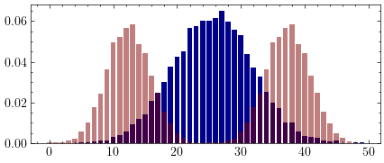
Distance matrix
$$C = d(x_i, y_j) = \frac{1}{2}(x_i - y_j)^2$$
$$i = {1, 2, \ldots, M} \ \text{and} \ j = {1, 2, \ldots, N}$$
C = np.zeros((M, N))
for i in range(M):
for j in range(N):
C[i, j] = .5 * (x[i] - y[j])**2
fig, ax = plt.subplots(figsize=(3, 3))
ax.matshow(C)
plt.show()
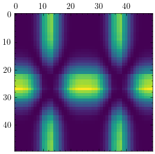
Gradient ascent algorithm
Dual formulation
$$\sup_{\psi, \phi} \big\{ \sum_j\psi_j\nu_j + \int_X \phi(x) d\mu(x) : \psi_j + \phi(x) \leq c(x, y_j) \big\}$$which is equivalent to
$$\sup_{\psi} \big\{ \sum_j\psi_j\nu_j + \int_X \inf_{j}[c(x, y_j) - \psi_j] d\mu(x) \big\}$$This loss function is non-smooth but it can be optimized with a projective gradient ascent algorithm
Objective function
$$J(\psi) = \sum_j \psi_j \nu_j + \int_X \inf_j [c(x, y_j) - \psi_j]d\mu(x)$$with \( \psi = (\psi_1, \psi_2, \ldots, \psi_N) \in R^N \)
# Objective function
# Return the value of the objective function, arginf(c(x,y_j) - psi_j) and phi
def obj(psi, nu, M, N, C):
r = 0.
for j in range(N):
r += psi[j] * nu[j]
arg_inf = np.zeros(N, dtype = np.int64)
phi = np.zeros(M)
for i in range(M):
j_star = np.random.randint(N)
min_value = max(0., C[i, j_star] - psi[j_star])
nn = list(range(N))
shuffle(nn)
for j in nn:
new_value = C[i,j] - psi[j]
if (new_value > 0. and new_value < min_value):
min_value = C[i, j] - psi[j]
j_star = j
phi[i] = min_value
arg_inf[i] = j_star
r += min_value * x[j_star]
return r, phi, arg_inf
Gradient of the objective function
$$\nabla J (\psi) = \left( \frac{\partial J}{\delta \psi_1}, \frac{\partial J}{\partial \psi_2}, \ldots, \frac{\partial J}{\partial \psi_N} \right) = \left( \ldots, \frac{\partial J}{\partial \psi_k}, \ldots \right)$$
with $k = 1, 2, \ldots, N$
$$ \begin{align} \frac{\partial J}{\partial \psi_k} &= \frac{\partial J}{\partial \psi_k} \sum_j \psi_j \nu_j + \int_X \inf_j [c(x, y_j) - \psi_j]d\mu(x) &= \frac{\partial J}{\partial \psi_k} \sum_j \psi_j \nu_j + \sum_i \inf_j [c(x_i, y_j) - \psi_j]x_i\ &= \nu_k + \frac{\partial J}{\partial \psi_k} \sum_i [c(x_i, y_{j_i^{}}) - \psi_{j_i^{}}]x_i\ \end{align} $$
where $j_i^{*} = \arg \inf c(x_i, y_j) - \psi_j$
$$ \begin{align} \frac{\partial J}{\partial \psi_k} &= \nu_k + \sum_i \frac{\partial J}{\partial \psi_k} [c(x_i, y_{j_i^{*}}) - \psi_{j_i^{*}}]x_i\ &= \nu_k - \sum_i \delta_{k j_i^{*}} x_i\ \end{align} $$
where \( \delta_{k j_i^{}} = [k = j_i^{}] \) is the Kronecker delta function
Thus
$$\nabla J (\psi) = \left( \ldots \nu_k - \sum_i \delta_{k j_i^{*}} x_i \ldots \right)$$
# Gradient of J
# Here it doesn't depend on the parameter psi
def grad_obj(psi, phi, arg_inf, nu, M, N):
grad = np.zeros(N)
for k in range(N):
grad[k] = nu[k]
for i in range(M):
grad[k] -= x[arg_inf[k]]
return grad
Projective Gradient ascent algorithm
- Choose \(\psi \in \mathbb{R}^{N}\)
- \(\psi_{n+1} = \text{Proj}_{D} \left( \psi_n - \lambda \nabla J(\psi_n) \right)\)
- \(\phi_{n+1} = \text{Proj}_{D} \left( \inf_j c(x, y_j) - \psi_n(j) \right)\)
- Repeat steps 2 and 3 until convergence
where
- \(\lambda\) is the learning rate
- \(\text{Proj}\) is the projection onto \(D = \left[ 0, C(x, y_j) \right] ^ N\)
def project(psi, phi, M, N, C):
for i in range(M):
for j in range(N):
if psi[j] > 0.:
if C[i,j] - phi[j] < psi[j]:
psi[j] = C[i,j] - phi[j]
psi = np.maximum(np.zeros(N), psi)
return psi
# Projective gradient ascent
# Returns psi, phi and the loss
def proj_gradient_ascent(x, nu, M, N, lr = 1e-3, epochs = 100):
psi_0 = np.random.randn(N)
psi_0 = np.maximum(np.zeros(N), psi_0)
loss_0, phi_0, arg_inf = obj(psi_0, nu, M, N, C)
hist = []
best = {"psi": psi_0, "phi": phi_0, "loss": 0.}
best_epoch = 0
for epoch in range(epochs):
# project phi back onto [0, C]^N
phi_0 = project(phi_0.copy(), psi_0, M, N, C)
# Compute the gradient
grad = grad_obj(psi_0, phi_0, arg_inf, nu, M, N)
# Update psi
psi_1 = psi_0 - lr * grad
# project psi back onto [0, C]^N
psi_1 = project(psi_1, phi_0, M, N, C)
# Compute the loss and phi
loss_1, phi_1, arg_inf = obj(psi_1, nu, M, N, C)
# Save psi and phi
psi_0 = psi_1
phi_0 = phi_1
loss_0 = loss_1
# Save the loss history
if epoch > 0:
hist.append(loss_1)
if loss_1 > best["loss"]:
best["phi"] = phi_1
best["psi"] = psi_1
best["loss"] = loss_1
best["epoch"] = epoch
best_epoch = epoch
print("Max loss {} at epoch {}".format(best["loss"], best["epoch"]))
return best, hist
params, hist = proj_gradient_ascent(x, y, M, N)
Max loss 1.8869948125000022e-06 at epoch 92
psi, phi, loss, epoch_max = tuple(params.values())
fig = plt.figure(figsize=(6, 3))
plt.plot(hist, label = "loss J($\psi$)", color="darkblue")
plt.axhline(loss, color = "red", label = "max J($\psi$)")
plt.legend()
plt.show()
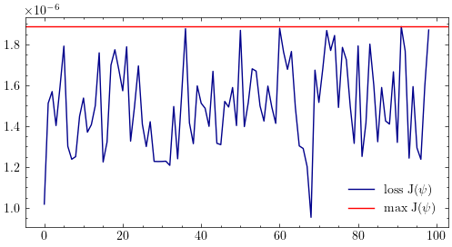
Primal from dual
def init_gamma(x, y, M, N, C, phi, psi, eps):
Ax = np.kron(np.identity(M), np.ones(N))
Ay = np.kron(np.ones(M), np.identity(N))
A = np.concatenate((Ax, Ay), 0)
c = C.flatten()
u = np.concatenate((phi, psi), 0)
# Slack variables
# xi = 0 when si > 0
s = c - A.T @ u
# Initialize gamma
gamma = np.ones(M * N)
# Number of nonzero variables
k = M * N
for i in range(s.size):
if abs(s[i]) > eps:
gamma[i] = 0.
k -= 1
Gamma = gamma.reshape((M, N))
return Gamma, k
eps = 1e-3
Gamma_0, k = init_gamma(x, y, M, N, C, phi, psi, eps)
fig = plt.figure(figsize=(3.5, 3.5))
plt.imshow(Gamma_0, cmap = mpl.colormaps["inferno"])
plt.show()
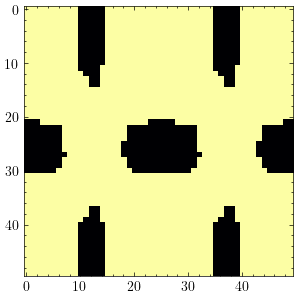
Constraints for \(A_x \gamma = x\)
def linear_constraints_x(Gamma, M, N, k, eps):
# Indices of non zeros
Indices = []
for i in range(M):
for j in range(N):
if abs(Gamma[i,j]) > eps:
Indices.append([i, j])
# Number of nonzeros for the ith row
Rows = dict()
for i in range(len(Indices)):
j = Indices[i][0]
if not j in Rows:
Rows[j] = 1
else:
Rows[j] += 1
# Fill A and b
A = []
b = []
skip = 0
for (i, n) in Rows.items():
vec = np.concatenate((np.zeros(skip), np.ones(n), np.zeros(k - n - skip)), 0)
A.append(vec)
b.append(x[i])
skip += n
return A, b, Indices
Constraints for \(A_y \gamma = y\)
def linear_constraints_y(Gamma, M, N, k, eps):
# Indices of non zeros (i, j)
I = []
for i in range(M):
for j in range(N):
if abs(Gamma[i,j]) > eps:
I.append([i, j])
# Indices of non zeros (j, i)
Indices = []
for j in range(N):
for i in range(M):
if abs(Gamma[i,j]) > eps:
Indices.append([j, i])
# Number of indices to skip
Skip = dict()
for i in range(len(Indices)):
j = Indices[i][0]
if not j in Skip:
Skip[j] = 1
else:
Skip[j] += 1
# Fill A and b
A = []
b = []
for (j, skip) in Skip.items():
vec = np.zeros(k)
for idx in range(len(I)):
ii, jj = I[idx]
if (jj == j):
vec[idx] = 1
A.append(vec)
b.append(y[j])
return A, b
Primal formulation
def primal_from_dual(Gamma, x, y, M, N, C, k, eps):
Ax, bx, I = linear_constraints_x(Gamma, M, N, k, eps)
Ay, by = linear_constraints_y(Gamma, M, N, k, eps)
# Distance vector
v = np.zeros(k)
for idx in range(len(I)):
i, j = I[idx]
v[idx] = C[i, j]
# Variable
z = cp.Variable(k)
# Objective function
obj = cp.Minimize(v.T @ z)
# Constraints
constraints = [z >= 0]
for A, b in zip(Ax, bx):
constraints.append(A @ z >= b)
# Constraints for A_y @ z =y
for A, b in zip(Ay, by):
constraints.append(A @ z >= b)
# Solve the LP problem
problem = cp.Problem(obj, constraints)
sol = problem.solve()
print(f"Min <c, z> = {sol}")
# print(z.value)
Z = z.value
# Gamma
Gamma = Gamma.copy()
for idx in range(k):
i, j = I[idx]
Gamma[i, j] = Z[idx]
return Gamma
Gamma = primal_from_dual(Gamma_0, x, y, M, N, C, k, eps)
Min <c, z> = 3.689743876622332e-06
Optimal transportation map
fig = plt.figure(figsize=(3.5, 3.5))
plt.imshow(Gamma)
plt.title("Optimal transportation map $\gamma_j(x)$")
plt.show()
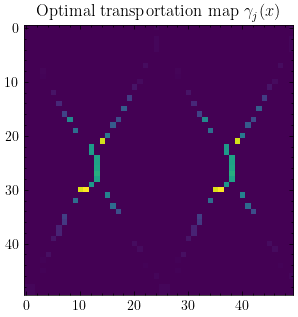
Marginal distributions
def marginal_dist(Gamma, M, N, i):
if i == 0:
g= np.zeros(M)
for i in range(M):
for j in range(N):
g[i] += Gamma[i, j]
else:
g = np.zeros(N)
for i in range(M):
for j in range(N):
g[j] += Gamma[i,j]
g /= g.sum()
return g
gx = marginal_dist(Gamma, M, N, 0)
plt.bar(range(M), x, color = "darkblue")
plt.bar(range(M), gx, color = "darkred", alpha = .5)
plt.show()
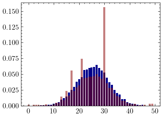
gy = marginal_dist(Gamma, M, N, 1)
plt.bar(range(N), y, color = "darkblue")
plt.bar(range(N), gy, color = "darkred", alpha = .5)
plt.show()
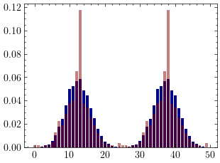
Exact solution with linear programming
Dual Formulation
def lp_dual(x, y, M, N, C):
# Variables psi and phi
psi = cp.Variable(N)
phi = cp.Variable(M)
# Objective funtion
dual_obj = cp.Maximize(phi @ x.T + psi @ y.T)
# Constraints
dual_constraints = [psi >= 0, phi >= 0]
for i in range(M):
for j in range(N):
dual_constraints.append(phi[i] + psi[j] - C[i, j] <= 0)
# Solve the dual problem
dual_problem = cp.Problem(dual_obj, dual_constraints)
dual_sol = dual_problem.solve()
print(f"max <psi, y> + <phi, x> = {dual_sol}")
return psi.value, phi.value
psi_lp, phi_lp = lp_dual(x, y, M, N, C)
max <psi, y> + <phi, x> = 3.689743876592917e-06
\(\psi^{}\) and \(\psi_{lp}^{}\)
plt.plot(psi_lp, label = "LP", color = "darkblue")
plt.plot(psi, label = "Gradient ascent", color = "darkred", alpha = .5)
plt.legend()
plt.title("$\psi^{*}$")
plt.show()
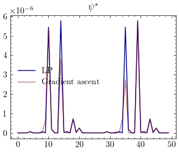
\(\phi^{}\) and \(\phi_{lp}^{}\)
plt.plot(phi_lp, label = "LP", color = "darkblue")
plt.plot(phi, label = "Gradient ascent", color = "darkred", alpha = .5)
plt.legend()
plt.title("$\phi^{*}$")
plt.show()
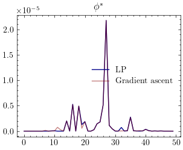
Primal formulation
def lp_primal(x, y, M, N, C):
z = cp.Variable(M * N)
b = np.concatenate((x, y))
Ax = np.kron(np.identity(M), np.ones(N))
Ay = np.kron(np.ones(M), np.identity(N))
A = np.concatenate((Ax, Ay), 0)
c = C.flatten()
primal_obj = cp.Minimize(c.T @ z)
primal_constraints = [z >= 0, A @ z >= b]
primal_problem = cp.Problem(primal_obj, primal_constraints)
primal_sol = primal_problem.solve()
print(f"Min <c, z> = {primal_sol}")
Z = z.value.reshape(M, N)
return Z
Gamma_lp = lp_primal(x, y, M, N, C)
Min <c, z> = 3.689743876055072e-06
Optimal transportation map
fig, axes = plt.subplots(1, 2, figsize=(7,3.5))
axes[0].set_title("Linear program")
axes[0].imshow(Gamma_lp)
axes[1].imshow(Gamma)
axes[1].set_title("Gradient ascent")
plt.show()
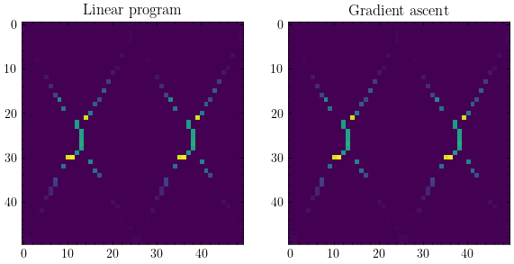
Marginal distributions
gx_lp = marginal_dist(Gamma_lp, M, N, 0)
plt.bar(range(N), gx, color = "darkblue")
plt.bar(range(N), gx_lp, color = "darkred", alpha = .5)
plt.show()
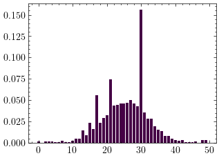
gy_lp = marginal_dist(Gamma, M, N, 1)
plt.bar(range(N), gy, color = "darkblue")
plt.bar(range(N), gy_lp, color = "darkred", alpha = .5)
plt.show()
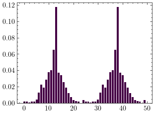
References
- Filippo Santambrogio, Optimal Transport for Applied Mathematicians
- Gabriel Peyré, Le transport optimal: de Gaspard Monge à la science des données
- David Gu, Optimal Transportation: Duality Theory
- Andersen Ang, Projected Gradient Algorithm